Item tab - Transform Panel
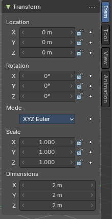
When you add an object to the scene then the Item tab with the Transform panel becomes visible. The content changes, dependent of the object type. And it changes with the mode.
In general you will most of the time see the same content though. Location, Rotation, Scale and Dimension.
Animate Property
The properties with a dot button behind can be animated.
Note that you can, different from Blender, animate multiple objects at once this way.
Keyframe and Driver coloring
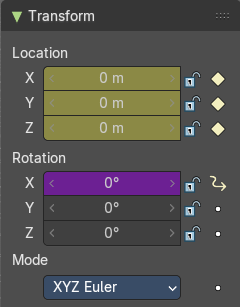
When a keyframe exists at the current position, then the corresponding edit box turns yellow. When a driver exists at the current position, then the corresponding edit box turns purple.
Note that you can have either a driver or a keyframe. Both is not possible.
Location
The current location of the object in its X, X and Z axis. The lock button behind the edit boxes allows you to lock the values.
Rotation
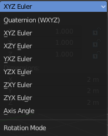
The current rotation of the object in its X, X and Z axis in world coordinates. The lock button behind the edit boxes allows you to lock the values.
Rotation Mode
Adjust what method gets used for the rotation. Euler rotation can run into a so called Gimbal lock, which can be avoided with quaternion rotation mode. But for most cases the default XYZ Euler method should work.
Quaternion
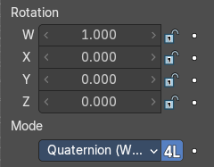
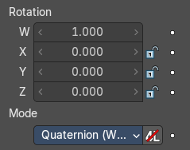
With euler angles you will have three values available. But with a quaternion you will have four values available. And quaternions reveals a 4L button. This button shows or hides a lock behind the W value. Normally a quaternion has just three locks, one for each of the single axis. The W value is a mathematical construct from the three object axis. And you usually neither want to edit it nor to lock it therefore.
Locking the W axis will lock all axis.
Scale
The current scale of the object in its X, X and Z axis in world coordinates. The lock button behind the edit boxes allows you to lock the values.
Scale is not dimensions. Your object can have a scale of 1 in world coordinates. But a dimension of 4.5. Note that for some operations it is required to have a scale of 1 to get some operations to work. This can be achieved with applying scale in the Object menu.
Dimensions
The current dimension of the object in its X, X and Z axis in world coordinates. The lock button behind the edit boxes allows you to lock the values.
The Dimensions edit boxes are just available for primitives objects. Objects like Empties or a Camera doesn't have a dimension, but a scale factor.
Right Click menu
Location, Rotation and Scale edit boxes and the locks have a right click menu with further functionality.
When there is already a keyframe available then the right click menu looks a bit different. Same counts for adding a driver first.
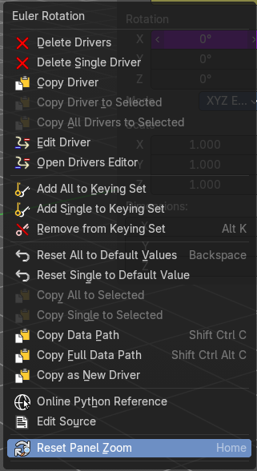
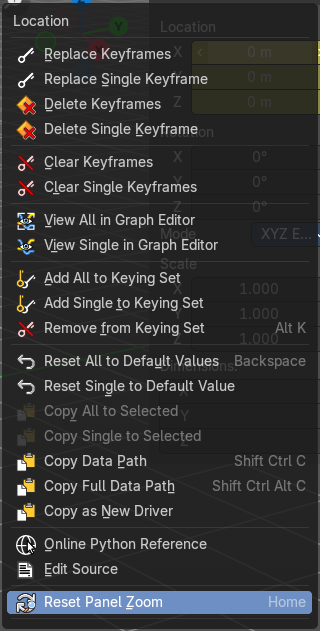
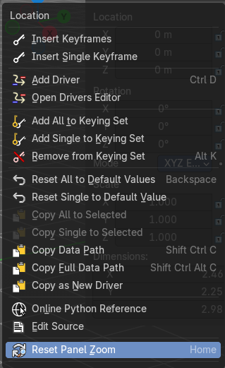
| Entry | What it does |
|---|---|
| Insert Keyframe | Inserts a keyframe at the current position. The keyframe type depends of where you right click. Insert Keyframe adds a keyframe for all axis. |
| Insert Single Keyframe | Inserts a keyframe at the current position. The keyframe type depends of where you right click. Insert Single Keyframe adds a keyframe for just the current axis. |
Add Driver
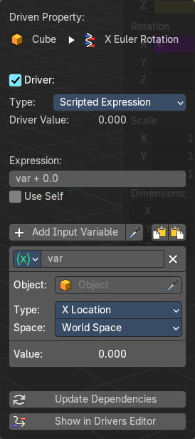
In Bforartists lots of things can be animated. Also buttons. Add Driver does exactly what it tells. It adds a driver for animation needs to the element. Drivers allows to control animation by properties like expressions, scripts or movements of other objects. Drivers are explained in the chapter 18 Editors - Drivers.
When you click the button the Driven Property panel will appear where you can change the properties for this driver. You don't need to confirm the driver creation. It is just further settings.
Driver Settings
| Entry | What it does |
|---|---|
| Type | The Driver type. There are two categories of drivers. Built-in and Custom · Built-in functions (Average, Sum, Min and Max): The driven property will have the value of the average, sum, lowest or highest (respectively) of the values of the referenced Driver Variables. If there is only one driver variable, these functions will yield the same result. · Custom (Scripted Expression): An arbitrary Python expression that can refer to the Driver Variables by name. |
| Driver Value | The current result of the driver setup. |
Expression
| Entry | What it does |
|---|---|
| Expression edit box | Add a custom expression. An Expression to use for scripted expression. The expression has access to a set of standard constants and math functions provided in the Driver Name space. For an example of adding a custom function to the name space. When the expression is invalid then you get an error message. This error message appears also with the default values. Just ignore. |
| Use Self | The variable self can be used for drivers to reference their own data. This is useful for objects and bones to avoid having creating a Driver Variable pointing to itself. Example: self.location.x applied to the Y rotation property of the same object will make the object tumble when moving. Note that dependencies for properties accessed via self may not be fully tracked. |
Driver Variables
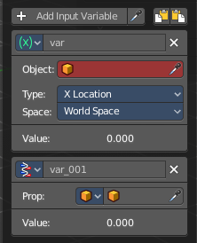
Driver Variables are references to properties, transformation channels, or the result of a comparison between transformations of two objects. It is displayed by a panel with all necessary settings, which gets filled in automatically when you create the driver.
Add Input variable
Add manually a new driver variable.
Picker should allow you to pick a target object. But this is dysfunctional here since the panel closes immediately when you move the mouse out of it. Please use the picker in the Driver Editor.
Copy and Paste buttons allows you to copy and paste Driver variable panels.
Driver Variable panel
Variable type
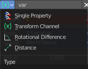
The content of the Driver variable panel changes, dependent of the variable type that you choose here. We came from the transform panel, so our default type here is transform channel. That's what we will explain here.
| Entry | What it does |
|---|---|
| Object | Our object type. |
| Type | The type of the driver. |
| Space | The transform space in which the transform should happen. |
| Value | The resulting value of the driver. |
| Entry | What it does |
|---|---|
| Update Dependencies | Update all dependencies. |
| Show in Drivers Editor | Opens the Drivers editor in a floating window. The drivers editor is explained in the chapter 18 Editors - Drivers. |
Open Drivers Editor
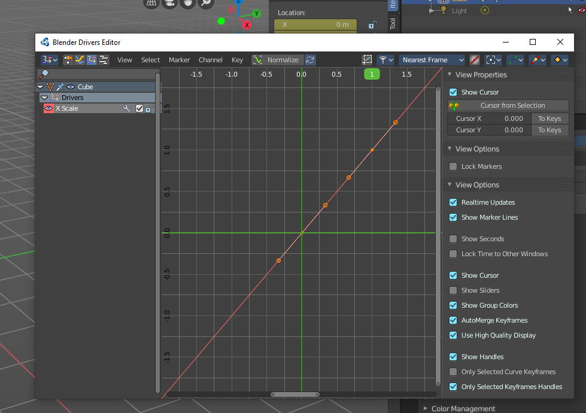
Opens the Drivers editor in a floating window. The drivers editor is explained in the chapter 18 Editors - Drivers.
| Entry | What it does |
|---|---|
| Add All to Keying Set | Add All to Keying Set adds the information of the element to the current keyframe. |
| Add single to Keying Set | Add to Keying Set adds the information of the element to the current keyframe. |
| Remove from Keying Set | Remove from Keying Set removes the information of the element from the current keyframe. · Reset All to Default Value: Resets the X Y and Z values to the default value. · Reset Single to Default Value: Resets the value for the single edit box under the mouse to the default value. |
| Copy All to Selected | Allows to copy the current rotation of all axis to another object. Workflow. Select target object, hold down shift, select source object, and use Copy All to Selected. |
| Copy Single to Selected | Allows to copy the current rotation of the single selected axis to another object. Workflow. Select target object, hold down shift, select source object, and use Copy All to Selected. |
| Copy Data Path | Copy Data Path copies the RNA data path for this property. |
| Copy Full Data Path | Copy Data Path copies the RNA data path for this property. |
| Copy as new Driver | Copies the current value as a new driver. |
| Assign Shortcut | This is just for the locks. Here you could assign a shortcut. |
| Online Python Reference | Developer feature. Open the Blender Python Reference. |
| Edit Source | Developer feature. When you have a text editor open in the current layout then you can call the UI script that contains this menu item. |
| Replace Keyframes | Replaces the keyframes in all axis at the current position. |
| Replace single Keyframe | Replaces the keyframe in the currently selected axis at the current position. |
| Delete Keyframes | Deletes the keyframes in all axis at the current position. |
| Delete Single Keyframe | Deletes the keyframe in the currently selected axis at the current position. |
| Clear Keyframes | Deletes all keyframes for all axis. |
| Clear single Keyframe | Deletes all keyframes for the currently selected axis. |
| Delete Drivers | Deletes the drivers for all axis. |
| Delete Single Driver | Deletes the drivers for just the current axis. |
| Copy Driver | Copies the driver. |
| Edit Driver | Opens the Driven Property panel where you can change the settings for this driver. |
| Reset Panel Zoom | Resets the panel to 100% zoom factor. |
Item tab - Transform Panel in Edit Mode
Just primitive objects like mesh and curve does have an edit mode. Non primitive objects like a camera or an empty doesn't have an edit mode. With two exceptions. Text and Force Field type Curve Guide. Both are curve types.
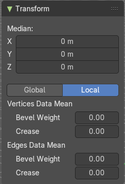
Mesh Objects
| Entry | What it does |
|---|---|
| Median | Median is the position of the selected mesh part. |
| Global / Local | Define if the orientation of the selection is local to the selected object, or global to the world coordinates. |
| Vertices Data | Mean Bevel Weight: Adjust the bevel weight for the selected vertices when you have a bevel modifier at the mesh. |
| Edges Data | Mean Bevel Weight: Adjust the bevel weight for the selected edges when you have a bevel modifier at the mesh. · Mean Crease: Adjust the weight of the selected vertices when you have a subdivision surface modifier at the mesh. |
Curve Objects / Surface Objects
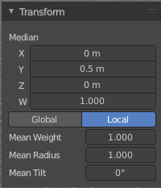
| Entry | What it does |
|---|---|
| Median | Median is the position of the selected mesh part |
| Global / Local | Define if the orientation of the selection is local to the selected object, or global to the world coordinates. |
| Mean Weight | Adjust the weight used by softbody. Needs softbody. |
| Mean Radius | Adjust the radius of the curve control points |
| Mean Tilt | Adjust the tilt of the curve control points. |
Metaball Objects
Median
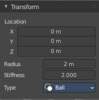
Median is the position of the selected mesh part
| Entry | What it does |
|---|---|
| Global / Local | Define if the orientation of the selection is local to the selected object, or global to the world coordinates. |
| Radius | Adjust the radius of the selected meta element. |
Stiffness
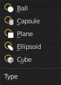
Adjust the stiffness of the selected meta element.
Type
Type is a drop down box. Adjust the meta element type.
Text Objects
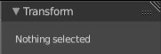
Text objects do have an edit mode, but they don't show content in the Transform panel.
Armature objects Edit Mode
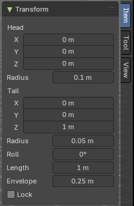
Bones do have a head and a tail. You cannot position the whole bone by numeric values, but the head and tail joints.
| Entry | What it does |
|---|---|
| Head | Adjust the world position of the head joint in x, y and z coordinates. · Radius: This is just useful when you use Envelopes type bones. Adjust the Envelope radius of the head joint. |
| Tail | Adjust the world position of the tail joint in x, y and z coordinates. · Radius: This is just useful when you use Envelopes type bones. Adjust the Envelope radius of the tail joint. |
| Roll | Adjust the bone roll. · Length: Adjust the length of the bone. · Envelope: This is just useful when you use Envelopes type bones. Adjust the overall Envelope size. · Lock: Lock the transform of the bones in edit mode. The bones cannot be moved, rotated or scaled. |
Lattice Objects
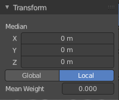
You need to have some vertices of the Lattice object selected to see the content.
| Entry | What it does |
|---|---|
| Vertex | See and set the vertex positions of the lattice objects. |
| Global / Local | Define if the orientation of the selection is local to the selected object, or global to the world coordinates. |
| Mean Weight | Lattice object is a deform cage. Adjust the mean weight of the selected vertice(s). |
Item tab - Transform Panel in Pose Mode
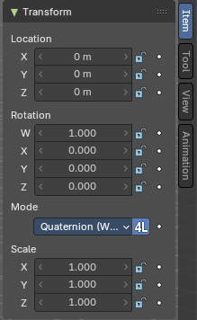
Armature Objects in Pose Mode
The content in Pose mode is the same than in Object mode. We have Location, Rotation and Scale Edit Boxes. And the corresponding lock and animate buttons.
With one small difference. The rotation mode starts with Quaternions by default. And not with Euler Angles.
Item tab - Mesh Object - Vertex Weights Panel
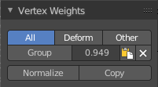
The Vertex Weights panel shows in Edit and Weight Paint mode, when you have vertices selected, and the selected vertice(s) has a weight assigned.
It allows you to modify the weight of this selected vertice(s).
In Weight paint mode you need to be in vertex selection mode and have a vertice selected. It will not show with face select mode. To select a vertice in weight paint mode hold down ctrl and click.
In Edit Mode you can select more than one vertices. In Weight Paint Mode just one vertice at a time.
| Entry | What it does |
|---|---|
| Filter Vertex Groups | The first row is a setting. You can filter by all, only vertex groups that are assinged to deform bones. Or vertex groups that are assigned to non deform bones. |
| Group | Set as active Vertex Group. · Weight: The weight of the selected vertice(s). The range goes from 0 to 1. · Paste Weight to Selected: Copy this group's weight to other selected vertices. · Delete Weight: Deletes the weight for this selected vertice(s). |
| Normalize | Normalizes the weight of the selected vertice(s). |
| Copy | Copy active vertex to other selected vertices. |
Item tab - Curve Object - Active Spline Panel
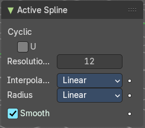
| Entry | What it does |
|---|---|
| Cyclic | Make this curve or surface a closed loop in the U direction. |
| Resolution U | Subdivisions per segments. |
Interpolation Tilt
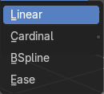
The tilt interpolation type.
Radius
The radius interpolation type.
Smooth
Smooth the normals of the surface or a beveled curve.
Item tab - Surface Object - Active Spline Panel
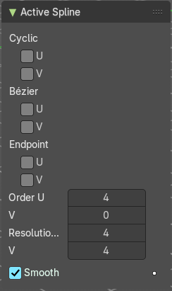
| Entry | What it does |
|---|---|
| Cyclic U / V | Make this curve or surface a closed loop in the U or V direction. |
| Bezier U / V | Make this curve or surface act like a Bezier curve in the U or V direction. |
| Endpoint U / V | Make this nurbs or surface meet the endpoints in the U or V direction. |
| Order U / V | Nurbs Order in the U or V direction. |
| Resolution U / V | The subdivision per segment. |
| Smooth | Smooth the normals of the surface or a beveled curve. |
Item tab - Grease Pencil Object - Active Spline Panel
Cyclic
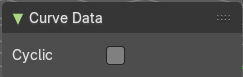
Make this curve or surface a closed loop in the U direction.